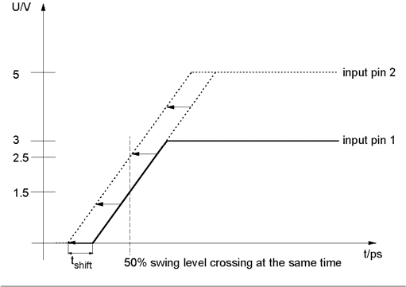

Compensation of Different Swings
To achieve full measurement accuracy, the drive edges must be corrected to assure the aligned 50% level crossing for rising and falling edges for all possible swings. This is called level dependent timing adjustment.
Note Only drive events are swing adjusted. Compare events keep unchanged.
Due to the fact that the test system family provides a closely controlled slewrate this adjustment can be achieved as follows: For swings higher than 3V the signal is driven earlier, respective for swings lower than 3V it is driven later than a signal with a 3V swing.
As an example the swing adjustment for a signal with a higher swing is shown in the figure below.

The test system software offers this adjustment option for each pin and/or group of pins.